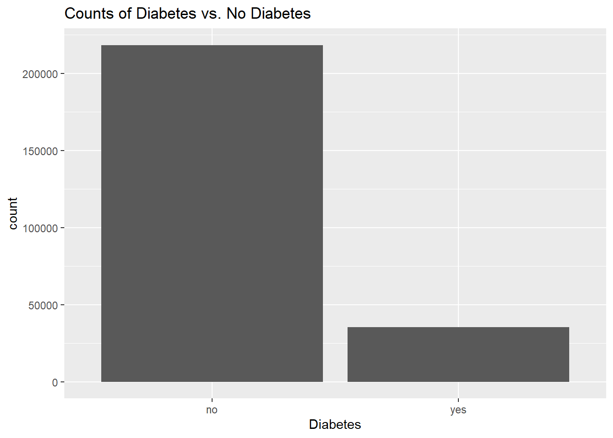
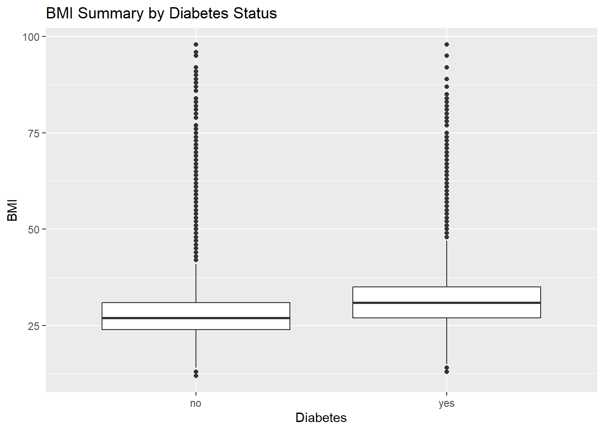
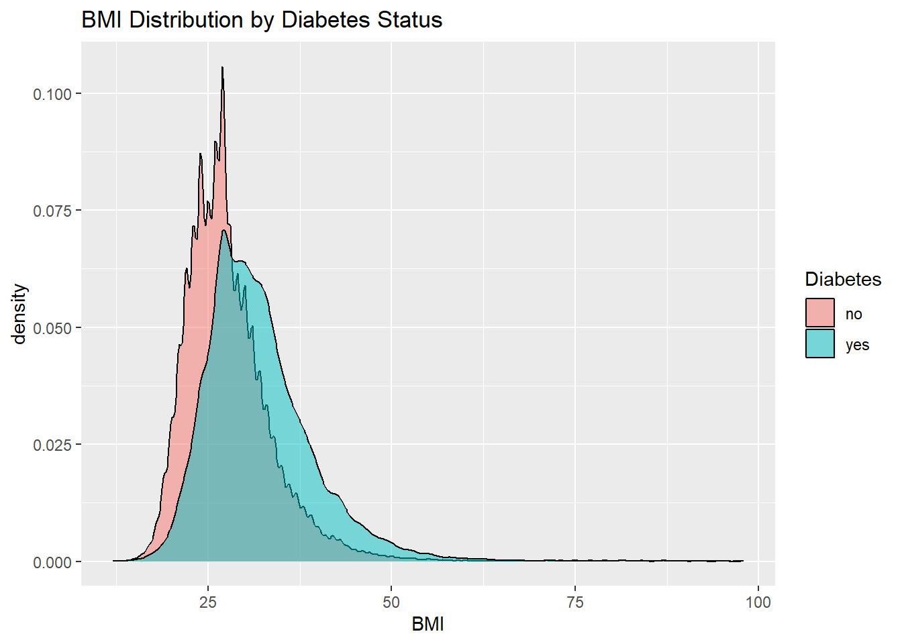
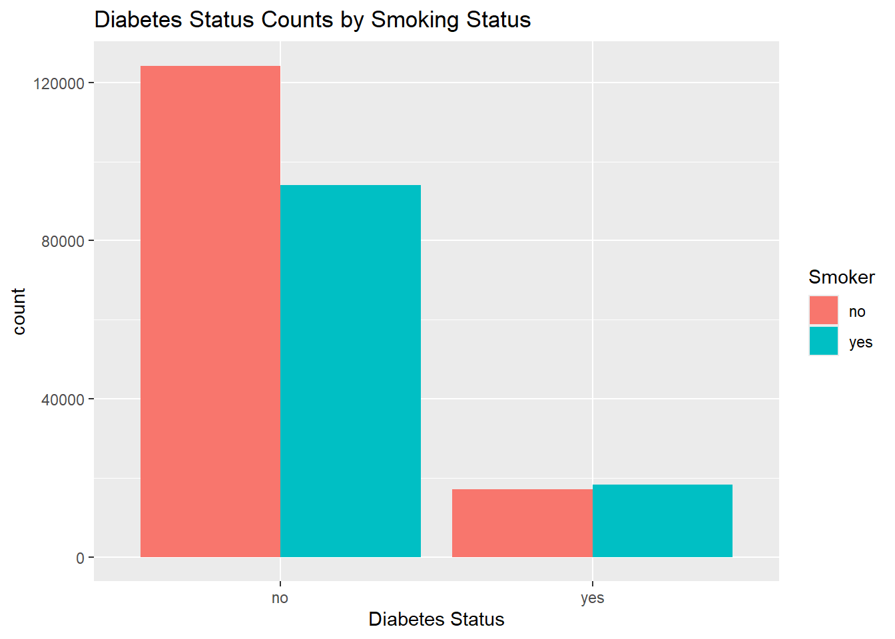
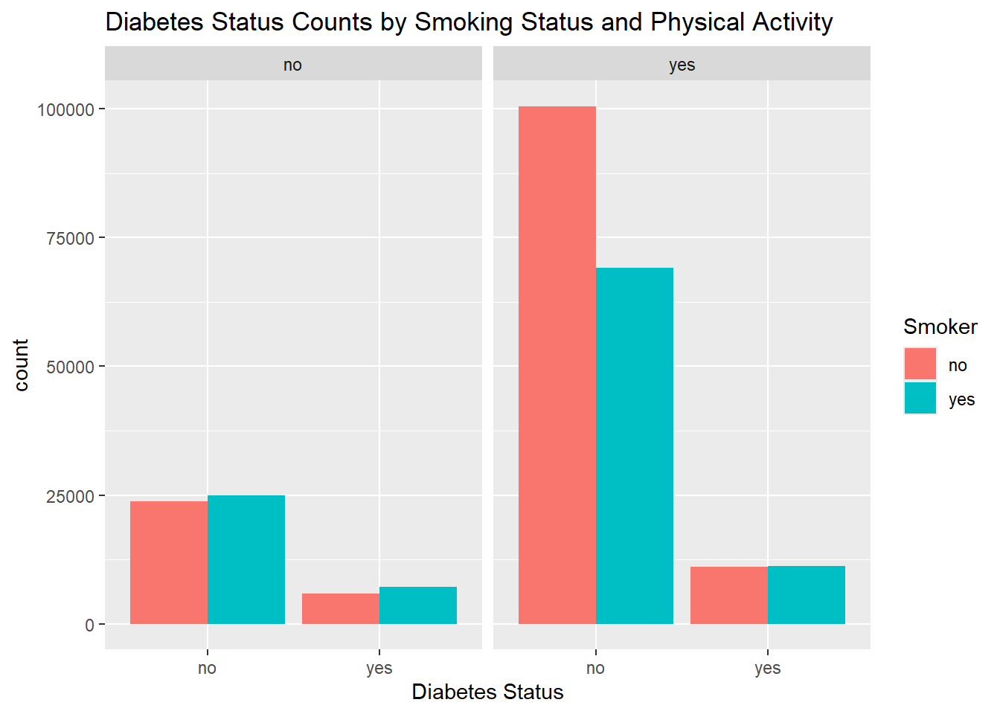
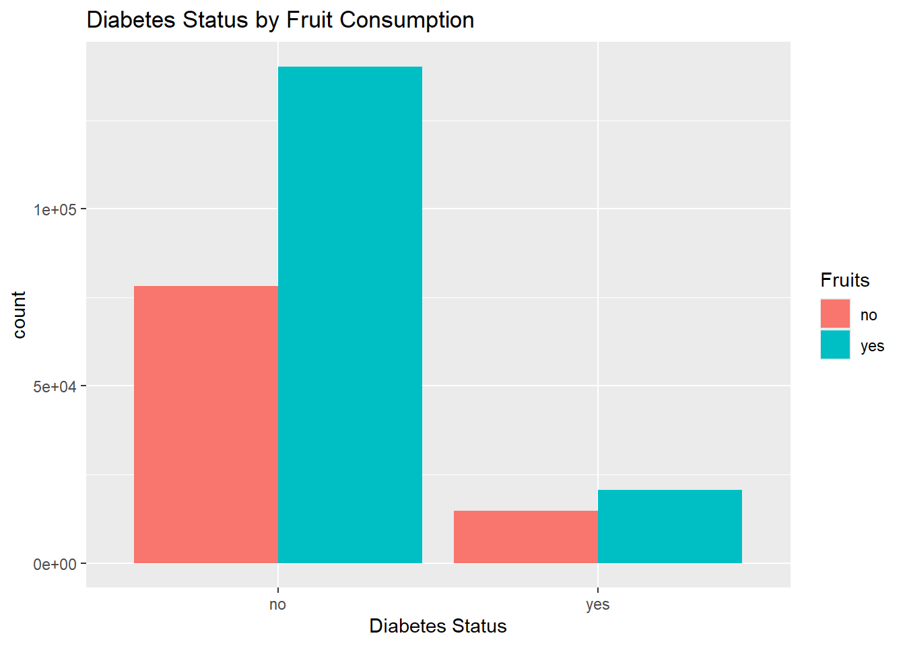
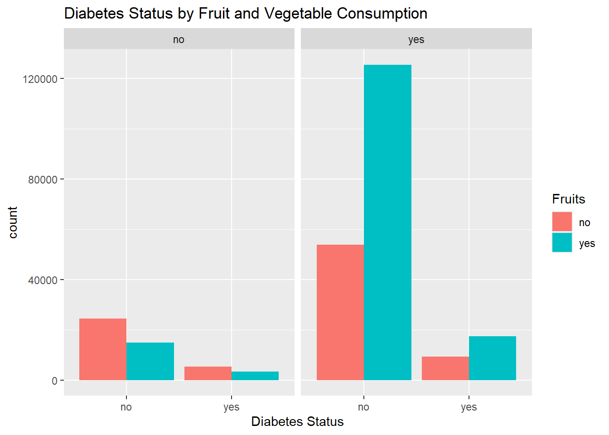
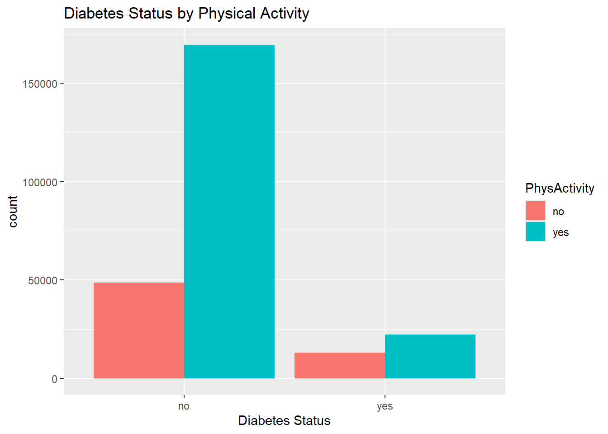
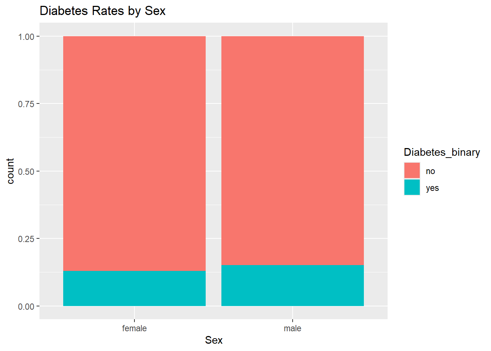

We start by loading the necessary packages to be used throughout this document.
library(tidyverse)
── Attaching core tidyverse packages ──────────────────────── tidyverse 2.0.0 ──
✔ dplyr 1.1.4 ✔ readr 2.1.5
✔ forcats 1.0.0 ✔ stringr 1.5.2
✔ ggplot2 4.0.0 ✔ tibble 3.3.0
✔ lubridate 1.9.4 ✔ tidyr 1.3.1
✔ purrr 1.1.0
── Conflicts ────────────────────────────────────────── tidyverse_conflicts() ──
✖ dplyr::filter() masks stats::filter()
✖ dplyr::lag() masks stats::lag()
ℹ Use the conflicted package (<http://conflicted.r-lib.org/>) to force all conflicts to become errors
Introduction
In this project we are working with a data set about diabetes. Our response variable of interest is no diabetes vs diabetes (which includes pre-diabetes). Also in the data set are 21 other variables which can be used as explanatory/feature variables.
We are interested in using a subset of the available variables to create a model which can be used to predict the presence or absence of diabetes. We will not use all 21 variables.
In choosing variables, we will select some that seem like they may influence the development of diabetes. This is not mandatory for creating a predictive model; it is just the approach we take here to identify a proper subset of the 21 available variables to use as features.
The following provides a list of explanatory variables we will use, a description of each variable, and whether the variable is quantitative or categorical:
BMI: Body Mass Index, which is weight in kg divided by the square of height in meters (quantitative)
Smoker: Smoked 100 or more cigarettes in lifetime (categorical, levels yes and no)
PhysActivity: Physical activity in past 30 days, not including job (categorical, levels yes and no)
Fruits: Consume fruit one or more times per day (categorical, levels yes and no)
Veggies: Consume vegetables one or more times per day (categorical, levels yes and no)
HvyAlcoholConsump: 14 or more alcoholic drinks per week for a male and 7 or more drinks per week for a female (categorical, levels yes and no)
DiffWalk: Serious difficulty walking or climbing stairs (categorical, levels yes and no)
Sex: (categorical, levels male and female)
The purpose of our exploratory data analysis (EDA) is to learn about the distributions of these variables and how they relate to one another. We will do this by way of both graphical and numerical summaries. After we have done this, we will create models to try to predict the presence or absence of diabetes based on observed values of the 8 explanatory variables chosen above. We will fit multiple models and compare them to see which performs best.
Data
In this section we first import the data and save it in a new object.
Rows: 253680 Columns: 22
── Column specification ────────────────────────────────────────────────────────
Delimiter: ","
dbl (22): Diabetes_binary, HighBP, HighChol, CholCheck, BMI, Smoker, Stroke,...
ℹ Use `spec()` to retrieve the full column specification for this data.
ℹ Specify the column types or set `show_col_types = FALSE` to quiet this message.
Next, we note that our categorical variables are saved as data type double. We will change these to factors with the appropriate levels (discussed above).
# A tibble: 2 × 2
Diabetes count
<fct> <int>
1 no 218334
2 yes 35346
dm_data |>ggplot(aes(Diabetes)) +geom_bar() +labs(x ='Diabetes', title ='Counts of Diabetes vs. No Diabetes')

We see from the contingency table and bar plot that there are far more people without diabetes than with diabetes.
Next, let’s examine whether BMI appears similar between those with and without diabetes. From what we know, elevated weight should be a risk factor for diabetes, so we would expect a higher BMI in those with diabetes. Again we will look at both a numerical description (contingency table) and a graphical description.
dm_data |>ggplot(aes(x = Diabetes, y = BMI)) +geom_boxplot() +labs(x ='Diabetes', y ='BMI', title ='BMI Summary by Diabetes Status')

From the contingency table, it seems that mean and median BMI are higher in those with diabetes, as expected. The box plot is a bit unusual looking. There are a lot of outliers in each group. Let’s look at a density plot to get a better sense of the distribution of BMI between the two groups.
dm_data |>ggplot(aes(BMI)) +geom_density(aes(fill = Diabetes), alpha =0.5) +labs(x ='BMI', title ='BMI Distribution by Diabetes Status')

We see from the density plot that BMI has a long right tail. This explains why there are so many outliers seen on the box plots. Generally speaking though, the values for BMI seem to be shifted higher for those with diabetes relative to those without diabetes.
What about smoking? It isn’t common wisdom that smoking is a major risk factor for diabetes. Let’s see if diabetes rates are higher in smokers by looking at numerical and graphical summaries.
`summarise()` has grouped output by 'Diabetes'. You can override using the
`.groups` argument.
# A tibble: 4 × 3
# Groups: Diabetes [2]
Diabetes Smoker count
<fct> <fct> <int>
1 no no 124228
2 no yes 94106
3 yes no 17029
4 yes yes 18317
This contingency table is a bit tough to interpret, since the number of people with diabetes is very dissimilar to the number of people without diabetes. Let’s make it easier on ourselves by creating a bar plot instead.
dm_data |>ggplot(aes(Diabetes)) +geom_bar(aes(fill = Smoker), position ='dodge') +labs(x ='Diabetes Status', title ='Diabetes Status Counts by Smoking Status')

We see from the plot that if you don’t have diabetes, you are more likely to be a non-smoker than a smoker. However, if you do have diabetes, you are more likely to be a smoker. This could suggest that smoking is a risk factor for diabetes (or diabetes is a risk factor for smoking!). An alternative explanation is that people who smoke are generally less healthy, which may predispose them to developing diabetes independent of their smoking status.
Can we attenuate the relationship between smoking and diabetes by incorporating another risk factor which represents “unhealthiness?” Let’s try by creating another bar plot of diabetes and smoking status, this time faceted by physical activity.
dm_data |>ggplot(aes(Diabetes)) +geom_bar(aes(fill = Smoker), position ='dodge') +facet_wrap(~PhysActivity) +labs(x ='Diabetes Status', title ='Diabetes Status Counts by Smoking Status and Physical Activity')

We see from the plot that for those who had not done physical activity in the past 30 days, smoking no longer seems to be related to the presence of diabetes! As suspected, this may provide some evidence that general “unhealthiness” is a big player in the association between smoking and diabetes. We do however see in those who had done physical activity in the past 30 days that the relationship between smoking and diabetes persists.
What about fruit? Fruit has natural sugars, so on one hand we may suspect it is a risk factor for diabetes. On the other hand, fruit is considered by many to be a healthy food, which may lead us to suspect that it is protective against diabetes. Let’s see what the data shows.
`summarise()` has grouped output by 'Diabetes'. You can override using the
`.groups` argument.
# A tibble: 4 × 3
# Groups: Diabetes [2]
Diabetes Fruits count
<fct> <fct> <int>
1 no no 78129
2 no yes 140205
3 yes no 14653
4 yes yes 20693
Again, a contingency table is not the easiest to interpret in this case since the counts of diabetes vs no diabetes are lopsided. As before, we will take a look at a bar plot, which is more interpretable.
dm_data |>ggplot(aes(Diabetes)) +geom_bar(aes(fill = Fruits), position ='dodge') +labs(x ='Diabetes Status', title ='Diabetes Status by Fruit Consumption')

We see that if you don’t have diabetes, you are much more likely to be a fruit eater. This could suggest fruit is protective against diabetes. Alternatively, it could suggest that people who are generally healthier eat more fruit and happen to also be at lower risk for diabetes because of a healthy lifestyle. A third possible explanation is that people with diabetes are more likely to AVOID fruit because it makes their blood sugar spike and hard to control.
Let’s create the same plot but facet by vegetable consumption.
dm_data |>ggplot(aes(Diabetes)) +geom_bar(aes(fill = Fruits), position ='dodge') +facet_wrap(~Veggies) +labs(x ='Diabetes Status', title ='Diabetes Status by Fruit and Vegetable Consumption')

We see that for those who eat vegetables, they are more likely to eat fruit than not, regardless of diabetes status. And in those who don’t eat vegetables, they are more likely to NOT eat fruit, regardless of diabetes status. This suggests fruit and vegetable consumption are associated, supporting the idea that people who eat fruits are probably generally healthier, as they eat vegetables too, regardless of diabetes status.
The last thing we will look at is diabetes rates by sex.
`summarise()` has grouped output by 'Sex'. You can override using the `.groups`
argument.
# A tibble: 4 × 3
# Groups: Sex [2]
Sex Diabetes count
<fct> <fct> <int>
1 female no 123563
2 female yes 18411
3 male no 94771
4 male yes 16935
dm_data |>ggplot(aes(Diabetes)) +geom_bar(aes(fill = Sex), position ='dodge') +labs(x ='Diabetes Status', title ='Diabetes Status by Sex')

There are clearly more females than males in this data set, since for both diabetes and non-diabetes groups there are more females than males. The difference between males and females is more pronounced in the non-diabetes group, suggesting perhaps that males are more likely to have diabetes than females. To see this a little bit better, we can use a stacked bar chart with normalized height instead.
dm_data |>ggplot(aes(Sex)) +geom_bar(aes(fill = Diabetes), position ='fill') +labs(title ='Diabetes Rates by Sex')

This chart makes it clear that males in this data set are slightly more likely to have diabetes than females in this data set. Because the difference is small and this is only one random sample of the population, this result does not necessarily imply that the true population rates of diabetes are different in males vs females.
This concludes our EDA. To head over to the webpage for viewing our modeling on the data set, click the following link: ***